Trotz der bisher beschriebenen Maßnahmen muss erfahrungsgemäß immer mit folgenden Störungen gerechnet werden:
Für das weitgehend gefahrlose Beseitigen dieser Störungen muss eine Strategie entwickelt, dokumentiert und durch bauliche, anlagentechnische und betriebliche Maßnahmen umgesetzt werden.
Dabei sind folgende grundsätzliche Vorgehensweisen bei der Störungsbeseitigung zu unterscheiden:
| ohne | Zugang zum Siloinneren (siehe Abschnitt 7.1) |
| mit | Zugang zum Siloinneren (siehe Abschnitt 7.2)
|
Bei neu errichteten Silos sind die Anforderungen nach DIN EN 12 779:2013 anzuwenden. Das bedeutet:
Aus Gründen der Arbeitssicherheit ist auch bei bereits bestehenden Silos der Variante „ohne Betreten des Siloinneren“ eindeutig der Vorrang einzuräumen, da in diesem Fall eine Gefahr für Leib und Leben erst gar nicht entstehen kann. Allerdings sind entsprechende bauliche, anlagentechnische und organisatorische Vorbereitungen zur Durchführbarkeit dieser Variante zwingend erforderlich.
Auch für die Durchführbarkeit der Varianten „mit Einfahren in das Siloinnere“ sind – mit gewissen Einschränkungen – bauliche, und anlagentechnische Vorbereitungen notwendigerweise zu treffen. Darüber hinaus sind in diesen Fällen besonders hohe Anforderungen an die Organisation, die Zuverlässigkeit und Ausbildung des eingesetzten Personals sowie die Bereitstellung von Hilfsmitteln und Schutzausrüstungen gefordert.
Sind aufgrund der Beschaffenheit und Zusammensetzung des gelagerten Späne-Gutes Fließstörungen zu erwarten oder treten beim praktischen Betrieb häufig Störungen im Materialfluss auf, die nicht von Hand beseitigt werden können, sollten technische Lösungen von vorneherein eingeplant oder ggf. auch nachgerüstet werden. Druckluftkanonen, die von Hand oder automatisch ausgelöst werden können, stellen eine mögliche Maßnahme dar, um den inneren Zusammenhalt des Späne-Konglomerates aufzulösen und so die Fließfähigkeit wieder herzustellen.
Konzepte zur Vorgehensweise bei Störungen
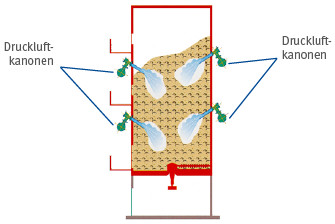
Abb. 7.1 Prinzip-Skizze eines Silos mit Druckluftkanonen
Bereits eingetretene Fließstörungen, wie Späne-Brücken, Schächte bzw. sog. Rattenlöcher, aber auch Anbackungen an den Silowänden, können über eine Zugangsöffnung im Silodach mittels pneumatischer oder mechanischer Reinigungsverfahren ohne Betreten des Späne-Lagerbereiches beseitigt werden.
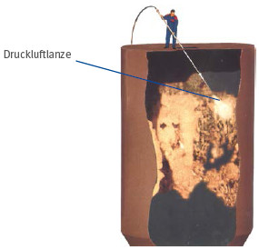
Abb. 7.2 Prinzip-Skizze zum Vorgehen mit einer Druckluftlanze
Für die Beseitigung von Anbackungen an den Silowänden eignen sich Druckluftlanzen recht gut.
Schächte lassen sich durch Verfahren beseitigen, bei denen ein rotierender Druckluftmotor mit mehreren Ketten bestückt wird und dann wie der Rotor eines Hubschraubers die Schächte durch Abschlagen des verfestigten Materials vom Zentrum her vergrößert.
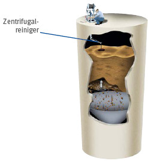
Abb. 7.3 Prinzip-Skizze zum Vorgehen mit einem Zentrifugalreiniger
Brücken müssen zunächst mit einem Bohrer durchstoßen werden, um so die Bedingungen eines schmalen Schachtes zu schaffen. Anschließend kann das Material, wie oben beschrieben, durch stetige Aufweitung des Schachtes abgeschlagen und der Austragung zugänglich gemacht werden.
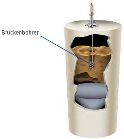
Abb. 7.4 Prinzip-Skizze zum Vorgehen mit einem Brückenbohrer
Die Einzelheiten der Vorgehensweise und der dafür notwendigen baulichen Voraussetzungen sollten bereits in der Planungsphase des Silos mit der Anbieter-/Lieferfirma der Reinigungssysteme abgeklärt werden.
Zum manuellen Beseitigen von Stauungen oder zum Lockern des Späne-Materials von außen können Stocher-Stangen verwendet werden. Voraussetzung für den Einsatz von Stocher- Stangen ist das Vorhandensein einer ausreichenden Anzahl von Revisions- bzw. Stocher-Öffnungen mit vorgelagerten Podesten. Dazu muss an jedem Podest vor einer Revisionsöffnung eine Steigleiter (max. 6 m Abstand untereinander) vorhanden sein.
Die oberste Revisionsöffnung sollte oberhalb des maximalen Füllstandes angeordnet sein.
Revisionsöffnungen müssen so ausgeführt werden, dass durch sie nicht in das Siloinnere eingestiegen werden kann (siehe auch Abschnitt 5.6).
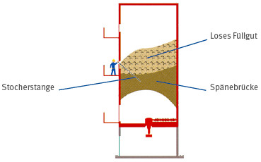
Abb. 7.5 Prinzip-Skizze eines Silos mit Revisionsöffnungen zum Stochern
Lassen sich Stauungen von außerhalb des Späne-Lagerraumes nicht beseitigen, muss wie in Abschnitt 7.2 beschrieben verfahren werden. Dabei gilt der Grundsatz:
Gefahr des Verschüttet-Werdens!
Um bei Überfüllung, sei es, weil der Späne-Anfall die vorhandene Lagerkapazität des Silos übersteigt oder weil die drohende Überfüllung nicht rechtzeitig bemerkt wurde, eine sichere und gleichzeitig leistungsfähige Entnahme zu gewährleisten, sollte die Austragung mit mehreren (mindestens 2) Ausfallstutzen ausgestattet werden. Wenn – wie im Sommer häufig der Regelfall – keine Späne-Abnahme durch die Feuerungsanlage erfolgt, kann so jederzeit – ohne größere Umbaumaßnahmen und Betriebsstillstände – das überschüssige Material aus dem Silo gefahren werden. Außerdem wird dabei die Austragung „bewegt“, was einem späteren Festsitzen vorbeugt.
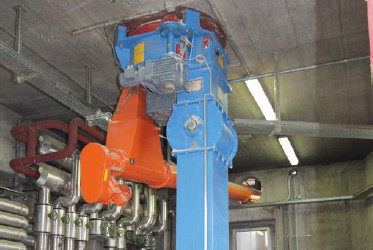
Abb. 7.6 Austrageinrichtung mit 2 Ausfallstutzen zum wahlweisen Späne-Transport in eine Heizungsanlage
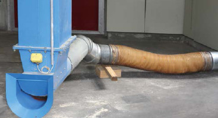
Abb. 7.7 eine externe Transportanlage/Späne- Entsorgung (7.7 unten)
Mit der Transportanlage können die Späne dann bequem in ein weiteres Silo, einen temporär aufgestellten Container oder – wie in den Abbildungen 7.8, 7.9 und 7.10 zu sehen – über den Anschluss einer LKW-seitig montierten Absauganlage (zum gefahrlosen „Abzapfen“) durch einen Späne-Händler entsorgt werden.
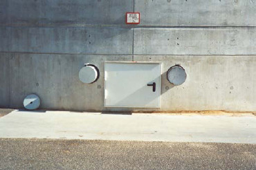
Abb. 7.8 Außerhalb des Silokörpers gelegene Anschlussstutzen für eine Transportanlage mit Umschaltweiche für die Austrageinrichtung (befindet sich hinter der verschlossenen Tür)
Wenn Silos für Holzstaub und -späne mit Saugfahrzeugen geleert werden sollen, darf die Leistung der im Silo eingebauten Austrageinrichtung nicht wesentlich kleiner sein als die Saugleistung des Saugfahrzeuges. Andernfalls ergeben sich für alle Beteiligten unakzeptabel lange Standzeiten dieser Fahrzeuge vor Ort. Die maximale Austragleistung für das Entleeren des Silos muss mit den Kapazitäten der Abnehmenden abgesprochen werden.
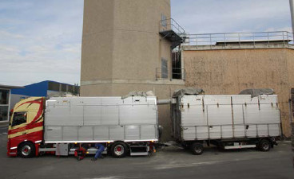
Abb. 7.9 LKW mit eigener Absauganlage
Saugfahrzeuge zum Entleeren von Silos haben üblicherweise eine Förderleistung von min. 60 m3/h.
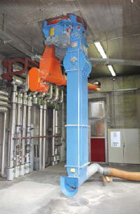
Abb. 7.10 Späneentnahme über Anschluss an gesonderten Entnahmestutzen
Gelegentlich ist die Austrageinrichtung so beschädigt, dass eine Reparatur von außerhalb des Späne-Lagerbereiches nicht möglich ist. Dies ist z. B. beim Bruch der Austragschnecke der Fall.
Die erste Möglichkeit, das Silo ohne Gefährdung der Beschäftigten zu entleeren, wenn die Austrageinrichtung ausgefallen ist, ist der Einsatz mobiler Austragsysteme.
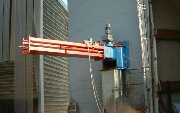
Abb. 7.11 Notentleerung eines Silos über transportable Austragschnecke in einen Container
Die Einzelheiten sollten bereits in der Planungsphase des Silos mit der Herstellfirma des vorgesehenen Notentleerungssystems abgeklärt werden.
Kann das Notentleerungssystem wegen Fehlens der baulichen und organisatorischen Voraussetzungen nicht eingesetzt werden, muss wie in Abschnitt 7.2 beschrieben verfahren werden.
Bei einem Brand oder auch nach dem Ansprechen der Druckentlastung in der Folge einer Staubexplosion muss zunächst umgehend die Feuerwehr verständigt werden. Außerdem sollten die weitere Späne-Zu- und -Abfuhr sowie die Abreinigung eventuell mit dem Silo verbundener Filteranlagen wirksam unterbunden werden.
Eine Explosion innerhalb eines Silos muss bei Neuanlagen nach DIN EN 12779 mit geeigneten Sensoren detektiert werden (z. B. mit Drucksensoren oder einer Überwachung der Explosionsdruckentlastung). Nach Erkennung einer Explosion muss sowohl das Beschickungs- als auch das Austragssystem automatisiert ausgeschaltet werden. Wegen der massiven Gefahren bei unsachgemäßer Vorgehensweise sollten eigene Löschversuche in jedem Fall unterbleiben.
Es besteht akute Staubexplosionsgefahr!
Daher müssen bauliche und/oder anlagentechnische sowie organisatorische Maßnahmen schon in der Planungsphase vorgesehen werden, um eine möglichst gefahrlose und schadensmindernde Ablöschung des Brandes und anschließende Austragung des brennenden oder glimmenden Späne-Materials zu ermöglichen.
Zunächst muss das Silo mit einer Sprühwasserlöscheinrichtung nach Abschnitt 9.1 und/oder einer Anschlussmöglichkeit für eine Inertisierungs-Anlage nach Abschnitt 9.2 ausgerüstet sein.
Im Brandfall kann die Feuerwehr die Sprühwasser-Löscheinrichtung mit Wasser, die Inertisierungs-Anlage mit Inertgas beaufschlagen.
Im Regelfall kann aber weder mit der Sprühwasser-Löscheinrichtung noch mit der Inertgas-Zufuhr alleine ein Brand vollständig abgelöscht werden; es ist lediglich möglich, ihn einzudämmen. Das liegt darin begründet, dass z. B. das Wasser mehrere Meter dicke Staub-/Späne-Schichten nicht durchdringen kann. Auch in Lagerbereichen im Inneren des Silos, die noch nicht offen brennen, können sich Glimmnester verbergen, die den Brand immer wieder neu anfachen würden. Das Späne-Material muss daher in jedem Fall vollständig aus dem Silo ausgetragen werden.
Dazu sollte wie folgt vorgegangen werden:
Mit der am Silo befindlichen Austragung wird das Material
in brennendem Zustand aus dem Silo heraus gefördert. Im ersten Fall ist die Förderlinie zur Feuerung zu unterbrechen und in den Außenbereich zu verlängern. Im zweiten Fall wird ein zusätzlicher Förderer (Förderschnecke oder Förderband) an den zweiten (bisher nicht anderweitig genutzten) Entnahmestutzen montiert. Außerhalb des Silogebäudes kann das brennende Späne-Material dann relativ gefahrlos von der Feuerwehr abgelöscht werden.
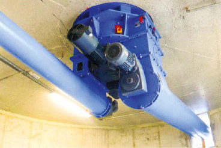
Abb. 7.12 Austrageinrichtung mit 2 gleichzeitig oder alternativ zu nutzenden Entnahmestutzen
Die geschilderte Vorgehensweise setzt voraus, dass eine Siloaustragung höherer Festigkeit eingesetzt ist, welche darüber hinaus mit mindestens einem zusätzlichen Notentleerungsstutzen ausgerüstet ist. Eine eventuelle Beschädigung der Siloaustragung infolge der Hitzeeinwirkung wird dabei bewusst in Kauf genommen.
Das Silo ist grundsätzlich komplett zu leeren, das im Silo gelagerte Späne-Material ist immer verloren! Zugangstüren und Öffnungen ins Siloinnere dürfen keinesfalls geöffnet werden! Um die Explosionsgefahr zu minimieren, sollte beim Austragen des Späne-Materials aus dem Silo das Innere des Späne-Lagerraumes während des gesamten Austragvorganges mit Wasser benetzt werden (z. B. über die vorhandenen Sprühwasserlöscheinrichtung) bzw. sollte eine vorhandene Inertisierung aufrechterhalten bleiben.
Es wird daher empfohlen, im Rahmen der Erstellung des Konzeptes zur Störungsbeseitigung einen entsprechend auf das Befahren von Silos oder Behältern spezialisierten Fachbetrieb (z. B. Industriekletterer) hinzu zu ziehen!
Bei jeder Späne-Entnahme und bei Stocher-Arbeiten ist eine Person während der gesamten Dauer ausschließlich mit der Überwachung der Arbeiten (Aufsichtführende(r)) zu beauftragen.
Vor Beginn der Arbeiten sind die Späne-Zufuhr, vorhandene Auflockerungseinrichtungen und die mechanische Austrageinrichtung außer Betrieb zu setzen und gegen ungewolltes Einschalten zu sichern.
Das Personal, das mit der Entleerung befasst ist, hat sich vor Beginn der Arbeiten über den Füllstand und die Verteilung der Späne im Silo zu orientieren.
Tätigkeiten im Inneren von Silos, z. B.
Aus Gründen des Arbeits- und Gesundheitsschutzes ist vor dem Einfahren in den Späne-Lagerbereich mit transportablen Messgeräten mit Alarm- und Warnfunktionen das Vorhandensein von Kohlenmonoxid (CO) bzw. Kohlendioxid (CO2) zu messen. Die mit dieser „Freimessung“ beauftragte Person muss die erforderliche Sachkunde besitzen. Diese Sachkunde bezieht sich auf:
Unabhängig von der Gerätewartung ist vor jedem Einsatz des Messgerätes von der nutzenden Person ein Test gemäß Herstellerangaben auf sichere Funktion durchzufuhren. Dieser Test umfasst:
Wird in das Silo eingefahren, sind die Messungen nach dem Einsteigen in das Silo kontinuierlich weiterzuführen.
Über die geschilderte Maßnahme „Freimessung“ hinaus kann es sinnvoll sein, vor dem Einfahren in das Silo mit einer Wärmebildkamera nach im Späne-Material versteckten Glutnestern zu suchen.
Ein Sicherungsposten muss während des gesamten Aufenthalts einer Person im Inneren des Silos anwesend sein und die eingefahrene Person beobachten. Der Sicherungsposten und die einfahrende Person müssen unterwiesen sein. Beide müssen zuverlässig sowie geistig und körperlich fit sein. Der Sicherungsposten muss außerdem mindestens 18 Jahre alt sein.
Für den Einfahrvorgang muss eine zugelassene Siloeinfahreinrichtung verwendet werden.
Wenn die Störungsbeseitigung im Silo nur durch Einfahren bzw. Betreten des Innenraumes durchzuführen ist, ist unbedingt folgender Grundsatz zu beachten:
Gefahr des Verschüttet-Werdens!
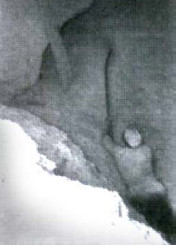 |
Abb. 7.13 Unzulässige, lebensgefährliche Arbeitssituation! |
Die DGUV Regel 113-004 „Arbeiten in Behältern, Silos und engen Räumen“ erläutert mögliche Gefährdungen und gibt die im jeweiligen Einzelfall zu beachtenden Schutzmaßnahmen beim Arbeiten in Behältern und Silos vor.
Zur Beseitigung von Störungen mit Betreten des Siloinneren gibt es verschiedene Strategien der Vorgehensweise. Diese sind in den Abschnitten 7.2.1 und 7.2.2 im Einzelnen beschrieben.
Je nach der in der Gefährdungsbeurteilung vorgesehenen Vorgehensweise sind unterschiedliche bauliche Voraussetzungen zu schaffen!
Auch das Einsteigen in ein gefülltes Silo von oben oder erst recht seitlich stellt immer eine große Gefahr für die einsteigende Person dar, weil Späne-Brücken zusammenbrechen können und in der Folge die Person verschüttet werden kann. Trotzdem ist es in manchen Fällen die einzige Möglichkeit, um Störungen in einem Silo zu beseitigen oder das Silo im Störungsfalle zu entleeren.
Einfahrende Person mit Einfahrhose ausstatten!
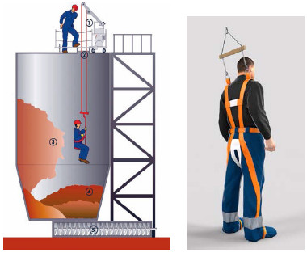
Abb. 7.14 Prinzip-Skizze zum Befahren eines Silos und Abb. 7.15 Ausstattung mit Siloeinfahrhose
Das Einfahren in das Silo ist nur mit einer geeigneten Siloeinfahreinrichtung gestattet. Da ein üblicherweise vorhandener Arbeitssitz für die Arbeiten im Silo verlassen werden müsste und damit die einfahrende Person im Falle eines Versinkens nicht mehr rechtzeitig herausgezogen werden kann, ist sie mit einer speziellen Siloeinfahrhose auszustatten.
Anmerkung:
Wenn der Mitarbeiter oder die Mitarbeiterin nicht mit einer Einfahrhose ausgestattet ist und mit einem Sitz einfährt, muss die Person zusätzlich mit einer entsprechenden Persönlichen Schutzausrüstung gegen Absturz (siehe Abschnitt 8.7 dieser DGUV Information) ausgestattet sein. Sie schlägt sich an der Einfahreinrichtung an. Wenn sie die Einfahreinrichtung verlässt, muss das Anschlagseil durch Anziehen der Winde der Siloeinfahreinrichtung stets straff gehalten werden, so dass ein Versinken im Schüttgut vermieden wird. Dieses Vorgehen ist – wegen der mannigfaltigen Fehlermöglichkeiten – sehr problematisch und daher wenig empfehlenswert.
Nach DGUV Regel 113-004 dürfen Personenaufnahmemittel (z. B. Arbeitssitze) nur verlassen werden, wenn eine Gefährdung durch das Schüttgut ausgeschlossen ist. Dies kann dann der Fall sein, wenn das Schüttgut im Rahmen der durchzuführenden Arbeiten nicht betreten werden muss oder wenn das Silo „technisch leer“ (Füllhöhe < 1 m) gefahren ist und Restmengen beseitigt oder Reinigungs- und Wartungsarbeiten durchgeführt werden müssen.
Bei Arbeiten mit häufigen oder längerfristigen Staubaufwirbelungen können die Verhältnisse sogar eine höhere Betriebsmittel-Kategorie (z. B. Kategorie 2) erfordern!
Daneben ist die Verwendung
beim Einfahren in Silos und Arbeiten in nichtleeren Silos obligatorisch.
Um ein Silo durch Absaugen des Späne-Materials zu leeren, muss eine separate Absaugleitung gelegt und an einen leistungsfähigen Ventilator angeschlossen werden. Die abgesaugten Späne können dann in einen Container zum Abtransport oder auch in ein anderes Silo auf dem Betriebsgelände gefördert werden. Die Rohrleitung sollte aus glatten Metallrohrteilen bestehen, da flexible Absaugschläuche einen deutlich höheren Strömungswiderstand haben als glatte Rohrleitungen. Lediglich die letzten wenigen Meter bis zum Absaugstutzen können wegen der notwendigen Bewegungsfreiheit flexibel gestaltet werden. Auf durchgängige Erdung der gesamten Leitung ist zu achten!
Die Rohrleitung muss außerdem ausreichenden Querschnitt haben, um eine Verstopfung zu verhindern. Je eingesetzten Absaugstutzen sollte die Leitung mindestens DN 250 mm aufweisen. Gegebenenfalls müssen Falschluftöffnungen und Revisionsöffnungen in der Leitung vorgesehen werden. Abbildung 7.16 zeigt den prinzipiellen Aufbau einer solchen temporären Anlage. Sinnvollerweise können wesentliche Leitungsbestandteile und der Ventilator als Festinstallation vorgehalten werden.
Vom Boden aus über die untere(n) Zugangstür(en) darf nur in den Fällen vorgegangen werden, in denen die Gefährdungsbeurteilung unter Berücksichtigung der Materialeigenschaften und des Lagerzustandes eindeutig ergeben hat, dass Personen durch abbrechende Späne-Stöcke oder durch Versinken in ausfließendem Späne-Material nicht gefährdet werden können.
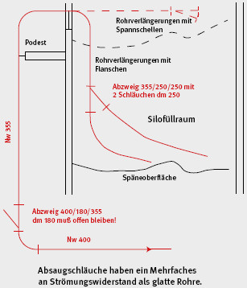
Abb. 7.16 Prinzipielles Vorgehen beim Absaugen des Siloinhaltes
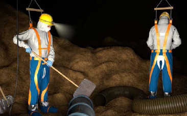
Abb. 7.17 Beispiel einer Arbeitssituation vor Ort im Silo
Anmerkung:
Eine Gefährdung ist im Regelfall vermieden, wenn das Silo „technisch leer“ ist und die verbliebene Schütthöhe des Füllgutes im Silo weniger als 1,00 m beträgt.
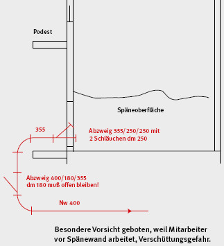
Abb. 7.18 Absaugen der Späne von der unteren Zugangstür
Für den Abbau eines Späne-Stockes sind geeignete Grab- und Stocher-Werkzeuge, wie z. B. Zinkengabeln (Kräuel) und Stocher-Stangen, zu verwenden.
Die Jalousiebretter werden von unten aus nach und nach entfernt; so können die Späne durch die Türöffnungen ausgezogen werden. Durch Abgraben der Späne über dem Türrahmen von außerhalb des Silos muss der Durchbruch durch die Späne nach oben ermöglicht werden. Bei größerer Füllhöhe muss mit Stocher-Werkzeugen von oberhalb der Zugangstüren über die Stocher-Öffnungen der Durchbruch oberhalb der Türen herbeigeführt werden.
Um das Unfallrisiko beim Ausräumen für die Beschäftigten zu reduzieren, muss das Silo mit einer ausreichenden Zahl von Zugangstüren versehen sein, damit von außerhalb des Lagerraumes gearbeitet werden kann und ein Eintreten in das Siloinnere möglichst vermeidbar bleibt.
Deshalb enthält EN 12779:2013 entsprechende Anforderungen für Öffnungen in Silos in Abhängigkeit von Grundrissform und -abmessungen des Silos (bis 45 m² Grundfläche).
Sind in breiten Silos mehrere nebeneinanderliegende Türen vorhanden, muss von allen Türen her vorgegangen werden, bis der Durchbruch durch das Späne-Material auf der ganzen Silobreite erfolgt ist.
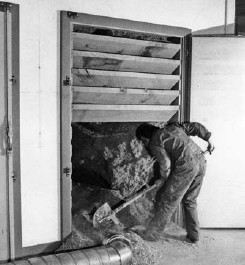
Abb. 7.19 Abziehen und Absaugen der Späne, Arbeiten außerhalb des Späne-Lagerraumes
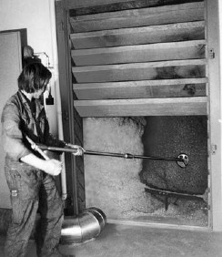
Abb. 7.20 Abziehen und Absaugen der Späne, Arbeiten außerhalb des Späne-Lagerraumes
Es ist eine schräge Halde zu bilden. Dazu sind die Späne mit langstieligen Werkzeugen möglichst hoch oben abzuziehen. Beim weiteren Abbau sind die Späne so abzuziehen, dass sich die schräge Halde gleichmäßig auf der ganzen Silobreite bildet.
Das Graben von Höhlen mit mehr als 0,5 m Tiefe in den Späne-Stock, mit der Absicht größere Mengen von Spänen abbrechen zu lassen, ist verboten!
Am Arbeitsort müssen die Späne laufend wegbefördert werden, damit eine größtmögliche Bewegungsfreiheit erhalten bleibt.
Sofern sich bei stark verdichteten Späne-Stöcken stehende Wände nicht mehr abziehen lassen oder bestehende Höhlen freigelegt wurden, muss versucht werden, die sich durch die Materialverfestigungen gebildeten Widerlager am Grund aus sicherer Entfernung zu zerstören.
| Anzahl von Türen in Silos mit einem Querschnitt bis 45m² | |||
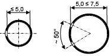 |
Rundes Silo: | ||
| Innerer Durchmesser | Anzahl Türen | ||
| ≤ 5,0 m | 1 | ||
| 5,0 m ≤ 7.5 m | 2 | ||
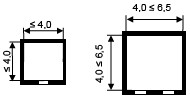 |
Quadratisches Silo: | ||
| Innere Seitenlänge a | Anzahl Türen | ||
| ≤ 4,0 m | 1 | ||
| 4,0 m ≤ 6,5 m | 2 | ||
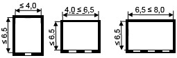 |
Rechteckiges Silo: | ||
| Innere Seitenlängen (a, b), Länge a in Austragsrichtung gemessen | |||
| a ≤ 6,5 m | Innere Seitenlänge b | Anzahl Türen | |
| ≤ 4,0 m | 1 | ||
| 4,0 m ≤ 6,5 m | 2 | ||
| 6,5 m ≤ 8,0 m | 3 | ||
Abb. 7.21 Anforderungen für Öffnungen nach EN 12779:2013
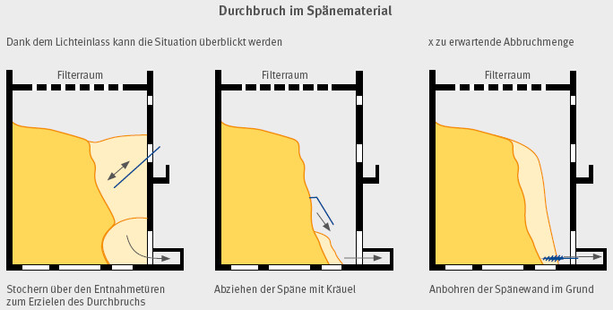
Abb. 7.22 Prinzipielle Vorgehensweise beim Abbau des Späne-Stockes vom unteren Silozugang